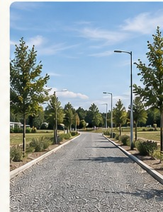
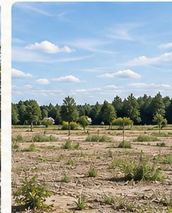
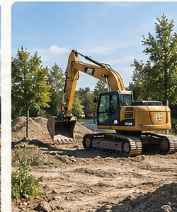

✓
Wykonane
SOLIDNE PODSTAWY- Podział geodezyjny działek
- Warunki zabudowy dla całego terenu
- Projekt drogi wewnętrznej
- Analiza przyłączy mediów
Transparentnie na każdym etapie. Sprawdź, co już za nami, nad czym pracujemy i jakie są kolejne kroki
w rozwoju Warszawska Park.


